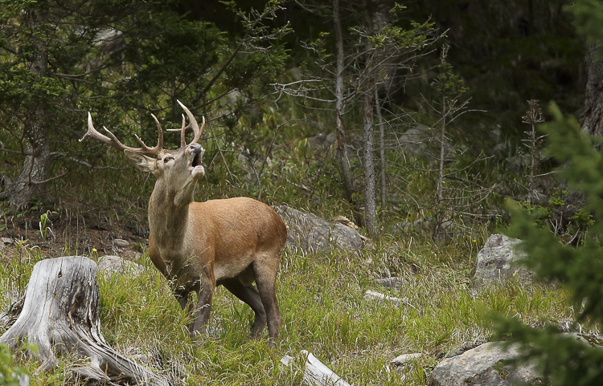
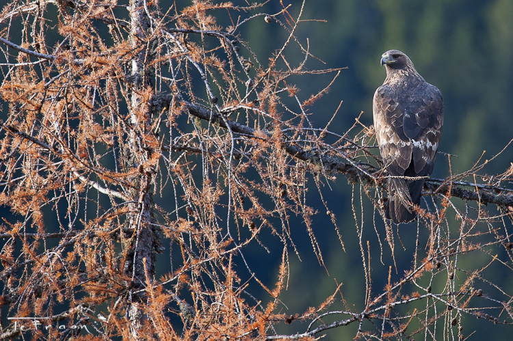
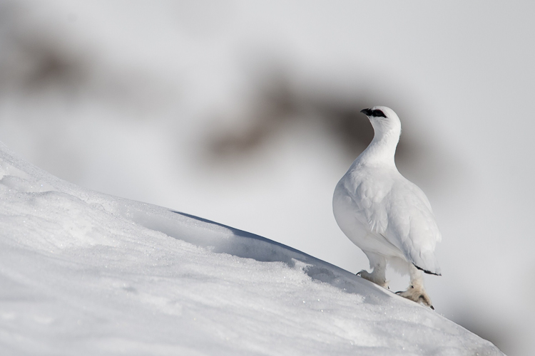
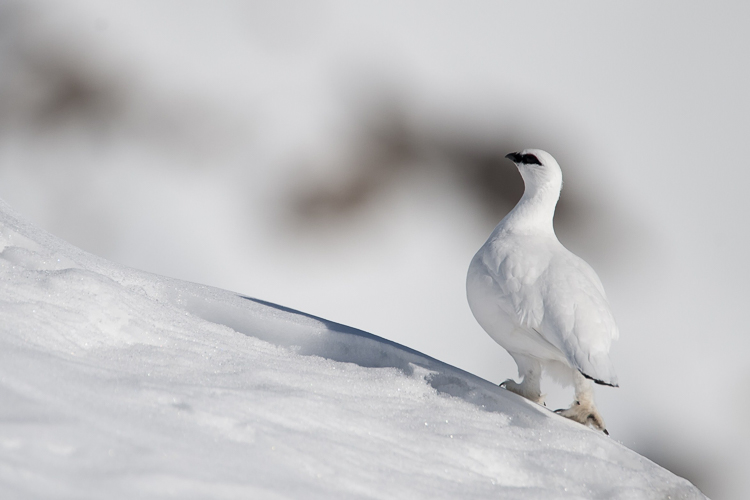

ALLE SORGENTI DEL NOCE
Il Corno dei tre Signori in Alta Val del Monte
 
Scendendo lungo la cresta dell'imponente cima del Vioz, verso la Punta San Matteo si incontra una montagna che fa da spartiacque tra la Val Camonica, la Valfurva e l'alta Val di Pejo. Siamo sul Corno dei Tre Signori, montagna battezzata in questo modo perché antico confine tra la Repubblica di Venezia (dominante in Valcamonica dal 1426), i Grigioni (a cui la Valtellina appartenne fino al XVIII secolo) ed il principato vescovile di Trento.
L'ambiente nella parte più alta della Val del Monte è prevalentemente formato da nevai e residui di sfasciumi di antichissime rocce sgretolate dal ghiaccio che, essendo molto poco permeabili, permettono all'acqua di scorrere in superficie creando un dedalo di sorgenti, ruscelli e laghetti che scendendo a valle formano la prima parte del fiume Noce le cui acque vengono raccolte nel lago artificiale di Pian Palù.
La parte della valle esposta a nord è sensibilmente più fredda ed umida e possiamo trovare alneti, rododendri (Rhododendron sp.) e formazioni ad alte erbe, mentre in quella esposta a sud le praterie ed il bosco raggiungono quote più alte. La foresta, habitat di importanti specie animali come il gallo cedrone (Tetrao urogallus) ed il cervo (Cervus elaphus) è formata prevalentemente da abeti rossi (Picea abies), larici (Larix decidua) e sporadicamente dal pino cembro (Pinus cembra), tra le piante erbacee più importanti da segnalare c'è la Linnea borealis, una tra le piante predilette del famoso naturalista svedese Carlo Linneo. L'importante idrografia della zona ci permette anche di trovare diverse zone umide qui infatti possiamo trovare caratteristiche praterie di Eriofori (Eriophorum sp.) oltre a ovodeposizioni di rospo comune (Bufo bufo) e rana temporaria (Rana temporaria).
In queste aspre zone possiamo avere la possibilità di osservare rari uccelli come il più grande rapace d'Europa, il gipeto (Gypaetus barbatus), reintrodotto nel Parco Nazionale dello Stelvio negli ultimi anni, o la schiva pernice bianca (Lagopus muta). Possiamo anche trovare una coppia di corvi imperiali (Corvus corax), che data la loro spiccata territorialità, nidificano sulle ripide pareti esposte al sole della Val del Monte.
 
